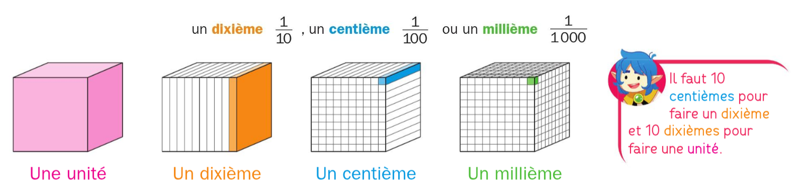
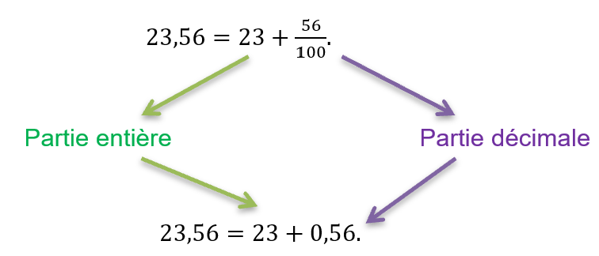
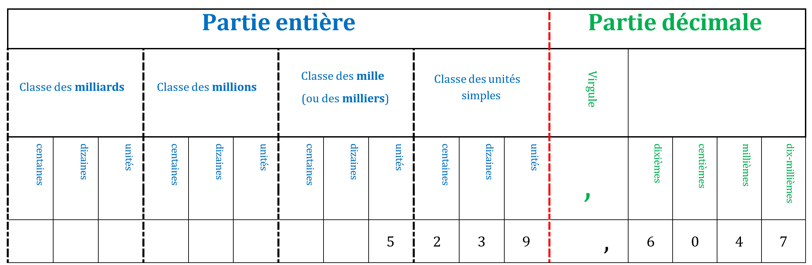

Chapitre 3 : Les nombres décimaux
I. Les fractions décimales
Définition : En divisant une unité en 10, en 100 ou en 1 000, on obtient :

Définition : Une fraction décimale est une fraction dont le dénominateur est 10, 100, 1 000, 10 000, ...
Remarque : 1 = 1010 = 100100 = 1 0001 000 = ...
C'est-à-dire : 1 unité = 10 dixièmes = 100 centièmes = 1 000 millièmes = ....
II. Les nombres décimaux — 1) Définitions
Définition : Un nombre décimal est un nombre qui peut s'écrire sous la forme d'une fraction décimale.
Exemple :
12,3406 = 123 40610 000
Définition : L'écriture décimale d'un nombre est composée d'une partie entière et d'une partie décimale.

Remarque : Un nombre entier est un nombre décimal dont la partie décimale est nulle (égale à 0).
II. Les nombres décimaux — 2) Rang des chiffres

Exemple : Le chiffre des millièmes est 4 et le nombre de centièmes est 523 960.
II. Les nombres décimaux — 3) Les différentes décompositions
Propriété : Un nombre décimal admet plusieurs décompositions.
Exemple : 153 unités, 4 dixièmes et 6 centièmes
• Écriture décimale : 153,46
• Somme de la partie entière et de la partie décimale : 153 + 0,46
• Somme de la partie entière et d'une fraction décimale : 153 + 46100
• Somme de la partie entière et de fractions décimales : 153 + 410 + 6100
• Fraction décimale : 15 346100
• Décomposition selon le rang des chiffres : (1 × 100) + (5 × 10) + (3 × 1) + (4 × 0,1) + (6 × 0,01)
III. Comparaison des nombres décimaux — 1) Méthodologie
Pour comparer deux nombres, on commence par comparer leurs parties entières :
- Si elles sont différentes : les deux nombres sont rangés dans le même ordre que leurs parties entières.
- Si elles sont égales : on compare leurs parties décimales chiffre après chiffre en commençant par les dixièmes, puis les centièmes, puis les millièmes...
Exemples : Comparer les nombres suivants : 179,83 et 181 ; 2,8 et 2,13 ; 7,23 et 7,3
179,83 < 181
2,8 > 2,13
7,23 < 7,3
Exemple : Ranger dans l'ordre croissant les nombres : 8,88 ; 38,8 ; 88,8 ; 8,08 ; 888,0 ; 8,808
8,08 < 8,808 < 8,88 < 38,8 < 88,8 < 888,0
III. Comparaison des nombres décimaux — 2) Encadrer et intercaler
Il existe différents types d'encadrement :
• Encadrement à l'unité : 2 < 2,9888 < 3
Les deux nombres sont des entiers qui se suivent.
• Encadrement au dixième : 2,9 < 2,9888 < 3,0
Les deux nombres ont chacun un chiffre après la virgule qui se suivent.
• Encadrement au centième : 2,98 < 2,9888 < 2,99
Les deux nombres ont chacun deux chiffres après la virgule et les chiffres des centièmes se suivent.
Exemples :
• Encadre au dixième 36,457 : 36,4 < 36,457 < 36,5
• Encadre au centième 5,235 : 5,23 < 5,235 < 5,24
• Encadre à l'unité 236,56 : 236 < 236,56 < 237
Définition : Intercaler un nombre, c'est trouver un nombre à placer entre deux autres nombres donnés.
Exemples : 256 < ................. < 257 ; 32,5 < ................. < 32,7 ; 5,8 < ................. < 5,9